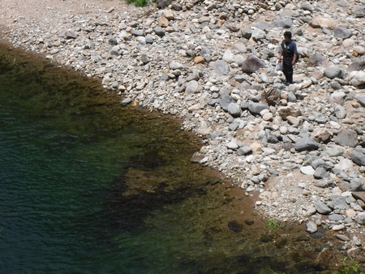
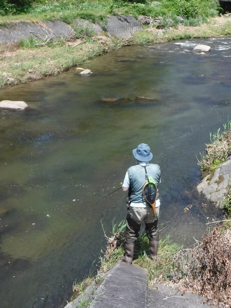
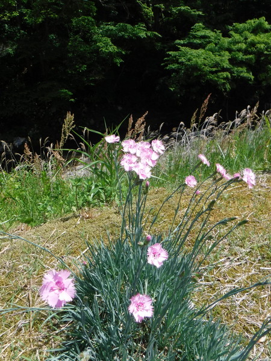
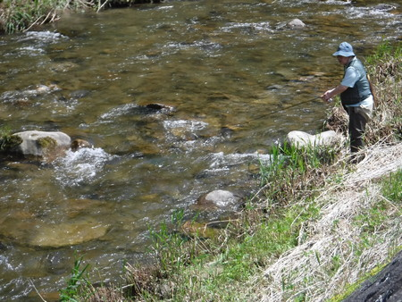

釣行日誌 故郷編
2022/05/28 花とおにぎり、結局ボウズ
今朝は叔父といっしょに、のんびりと喫茶店でモーニングを食べて出動。
県境に近い道路を走りつつ、弁当を買うために道の駅に寄る。ところが手頃な弁当は売られていなかった。食堂で定食を食べるしかないらしい。レジのおばさんに、おにぎりを作ってもらえませんか？とダメ元で頼んでみると、時間が掛かっても良いなら作れますよ、との返事。そこで、テラスへ出て、渓相を見がてら時間をつぶす。
すると、対岸に二人の若いルアーアングラーが現れ、崖下の大淵を攻め始めた。

なかなか良いところを鋭い精度のキャストで狙っていたが、少々渇水気味で、水面は静まったままだった。上から目線.....(笑)
かな～り待たされてから、おばさんが呼びに来てくれた。ようやくおにぎりが出来上がったらしい。二人で六個、一個百円だった。叔父から包みを受け取ると、ズシリと重い。
そこから峠を越えて隣村へ向かう。良さそうな支流のポイントがあったので、帰途、竿を出すことにして、どんどんと下って行く。
で、村の商店街に到達したのだが、入漁券販売所の看板も幟も見当たらない。しばし、入漁券を買いに、右往左往する。
ようやく店らしい店として見つけた雑貨店では、漁協から券が入荷していないとのこと。これでは見込みが薄い。（笑）
未知の川で、二人分の入漁券を買うのはリスクが大きく、僕は叔父の見学に回る。
15年ほど前に、叔父とのルアー行脚が始まった、懐かしの堰堤下でお弁当とする。ぽかぽかと日当たりの良い土手に座り込み、おにぎりの包みを開ける。
「ぱくり。」
「！！！」
道の駅のおばさん手作りのおにぎりが驚愕的に美味しい。このボリュームとこの味で、一個百円なんて信じられない。生涯で最も美味しいおにぎりだと思った。一個千円出しても良いくらいだった。
一人三個のおにぎりをあっという間に食べてしまうと、この川は、昔々、会社の同僚だったK君と徘徊している時に、偶然叔父と出会ったことがあったことを思い出した。
渓相は良いので、何か居ないかとよく見ていると、銀鱗が踊っている。稚アユである。
『こんな上流域でも、稚アユを放流しているのか.....』
それから、叔父の釣りをしばし見学する。ヨタヨタと川原に降りていったので、少々心配になったが、往年の正確なキャストは健在だった。

ここを攻めてから、あそこをやるべき.....などとシロートの誰かさんが思っているポイントには必ずルアーが入る。釈迦に説法であった。
ぼーっと見物しながら、ふと見ると、河畔に綺麗な花が咲いていた。


叔父の老練な釣り方でも、全く反応が無いので、いったん車に戻り、どんどんと流れ沿いの林道を下り、別の村へ。
そこから謎の峠道をひたすら走り、全然知らない村へ出る。
とりあえず川はあって、入漁券売り場もわかったので、今度は僕一人分の入漁券を買って、慌ただしく夕方の釣りを始める。ところが、叔父を待たせておくのは、気が急かされて、自分の釣りにならない。
瀬の尻で、一匹アタリがあったが乗らなかった。おそらくアマゴだったと思う。
叔父の車まで戻り、釣り支度から服を替え、家路に着く。お昼のおにぎりの美味しさの話題で三時間の帰途はあっという間だった。
釣行日誌 故郷編 目次へ
サイトマップ
ホームへ
お問い合わせ